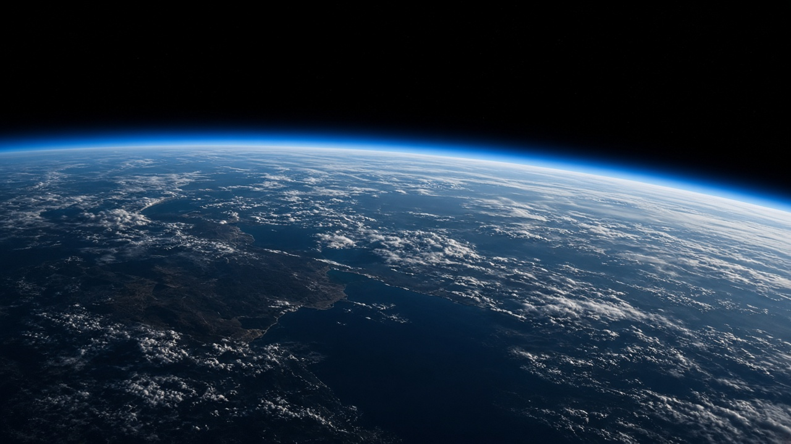

1 ноября 2026 · 09:17 · впереди
Пуск
Окно с 09:17 до 09:31 по Омску. Набор готовности публикуем в эфире с 08:00. Если ветер на LZ-1 выше 12 м/с, уводим посадку ступени в расход и пуск всё равно держим: корабль важнее борта B1041.
Страница эфира
31 октября · день тишины
Осмотр
После слива заправки ступень и корабль осматривают без экипажа на башне. В 19:00 брифинг погоды: баллистики, посадка, командир. Рахал и Рахал ночуют в профилактории космодрома. Выезд на старт 1 ноября в 05:10.

30 октября · 18:40 · впереди
Заправка
Генеральная репетиция с криогенной заправкой. Экипаж в скафандрах, люк закрыт, отбой на T−30 секунд, двигатели не запускаем. Клапан окислителя E9 №4 стоит новый: старый сняли 27 октября после сухого прогона, телеметрия показывала медленный уход давления. Повторный допуск клапана — до начала заправки, иначе репетицию сдвигаем на сутки и пуск 1 ноября снимаем.

29 октября · 10:00 · впереди
Ложементы
Примерка в лётном корабле, не в аналоге. Аварийное покидание башни — два прогона, сначала командир, потом пилот. Медицина смотрит посадку в кресле: у Ильяса на мартовском аналоге жалоб не было, у Тимура намечали подголовник. Если подголовник не сядет, его меняют ночью, к заправке 30-го.

28 октября · 16:40 · выполнено
Допуск
Врачебно-лётная комиссия на Восточном закрыла допуск обоих. Замечаний нет. Экипаж прилетел утром рейсом из Омска, в 11:10 был на площадке. До 29 октября выходов на башню нет.
26–27 октября · выполнено
Вывоз
26 октября в 07:40 транспортёр выставил EBAL S1 на LC-1. 27 октября — вертикализация уже была сделана ночью, днём сухой прогон систем. Единственное замечание: клапан окислителя E9 №4. Его сняли до прибытия экипажа, чтобы не смешивать людей и работу на двигательном отсеке.

20 октября · выполнено · B1041
Семь секунд
Статическое огневое лётной ступени перед кампанией. Девять E9, 7,0 секунд, тяга 101,4% номинала. Площадка цела, водяная завеса штатная. Кадр на этом экране — ранний стенд Ч-2, не этот прожиг: съёмку 20 октября с пламени не отдавали, слишком близко стояла смена.

12 марта 2026 · архив
Север-0
Последний орбитальный пуск перед людьми. B1037 села на LZ-1. Корабль без экипажа дошёл до П-4. Всё, что 1 ноября должно случиться со ступенью, уже случалось. Не случалось одного: голосов в канале Иртыш-1 и Иртыш-2.
Манифест